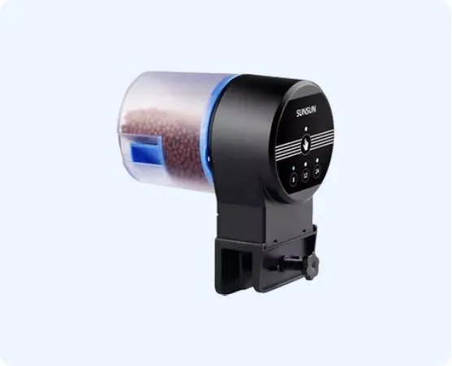

Аксессуары
Автоматическая кормушка для рыб AK-01S, объем 100 грамм
Цена и наличие
- 1 шт.69,38 BYN / шт.В наличии
Данные на 23.11.2026.
Характеристики
- Бренд
- SunSun
- Страна производитель
- Китай
- Емкость
- 100 грамм
Описание
Sunsun AK-01S - автоматическая кормушка высокого качества для кормления рыб и рептилий (например, красноухих черепах).
Кормушка для рыб автоматическая AK-01S, 100г объем Sunsun AK-01S – автоматическая кормушка высокого качества для кормления рыб и рептилий (например, красноухих черепах). Может использоваться для хлопьев, гранул и других сухих кормов. Для использования практически в любых аквариумах и террариумах. Кормушку Sunsun AK-01S можно прикреплять при помощи струбцины (входит в комплект) на стенку аквариума и террариума, а так же можно размещать её сверху на крышку аквариума. Установите таймер(12/24 часа) по вашему желанию. Работает от 2-х пальчиковых батареек типа АА (в комплект не входят), поэтому она не зависит от электросети. Кормушка оснащена как и автоматическим режимом кормления так и ручным. В любой момент вы можете переключиться на ручной режим. Для вашего удобства, в комплект кормушки входят два бокса для корма разного размера 50 мл и 100 мл. Вы с легкостью подбираете бокс, с расчетом того на какое время необходимо оставить корм. Боксы изготовлены из прозрачного пластика, и вам не нужно разбирать кормушку для того что бы посмотреть сколько корма осталось.